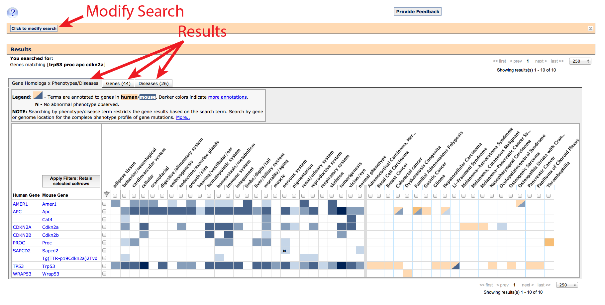
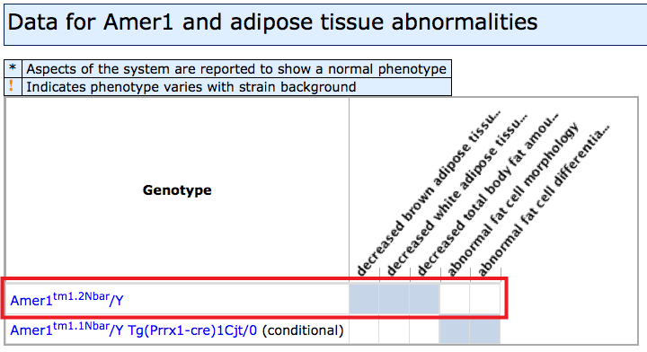
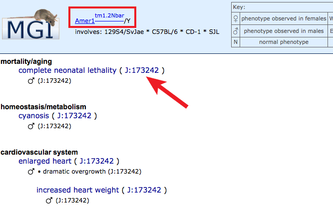
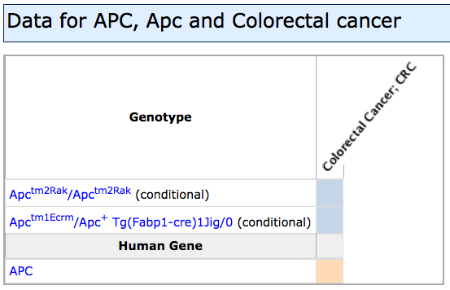
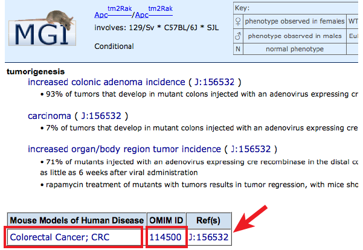
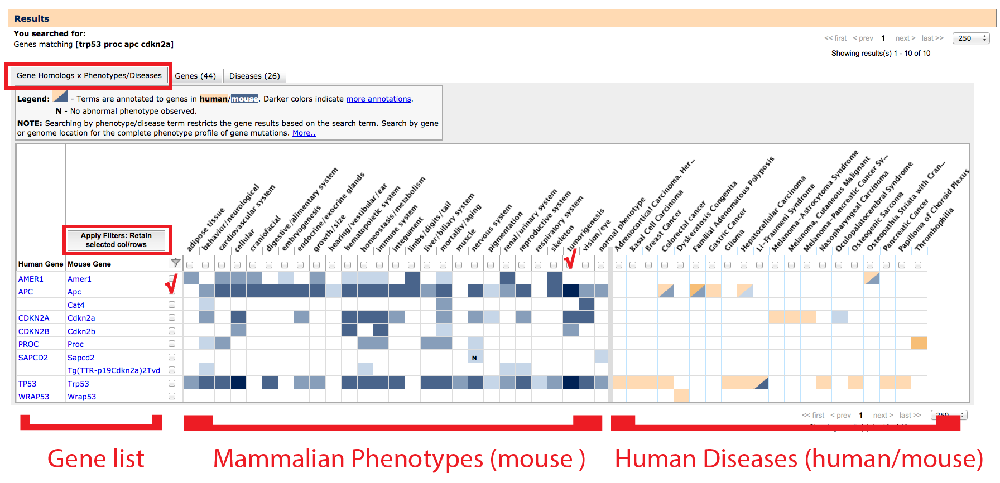
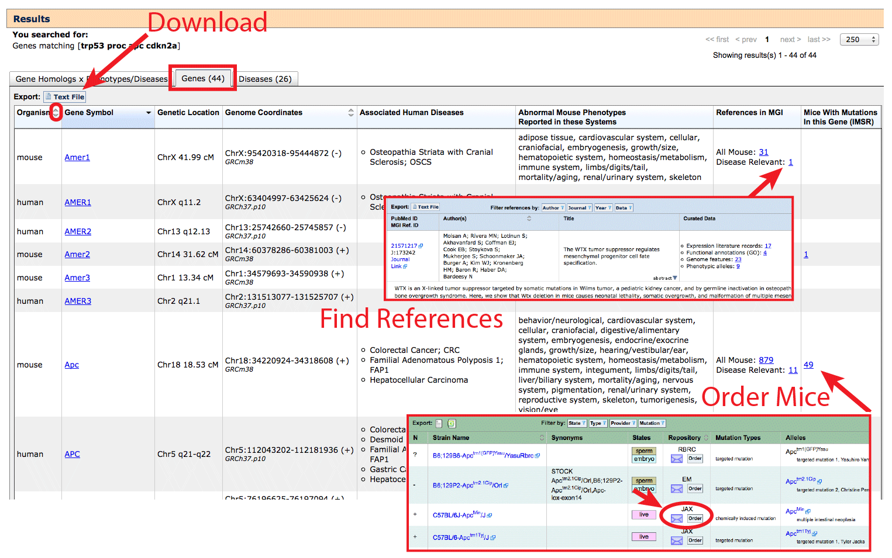
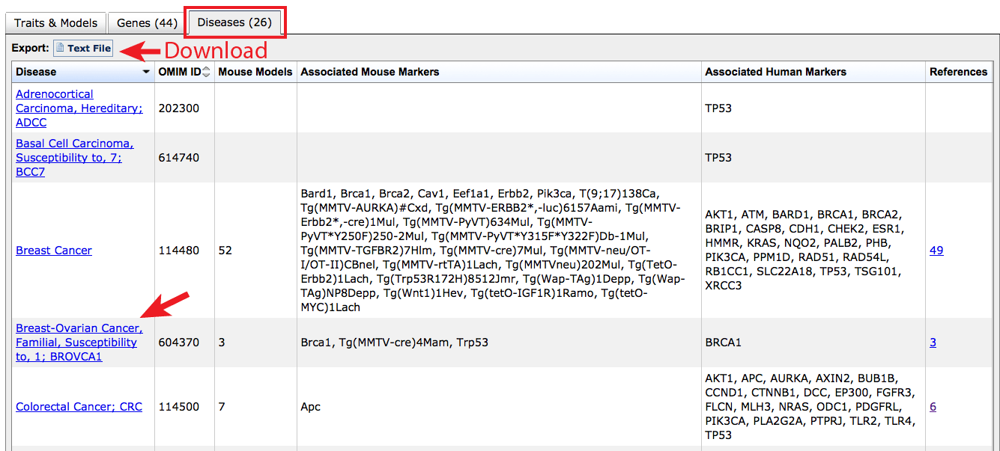

The Human–Mouse: Disease Connection
The goal of the Human–Mouse: Disease Connection (HMDC) is to provide seamless human-to-mouse data traversal, enabling clinical and translational researchers to take advantage of wealth of data and annotations from mouse models; as well as allowing mouse researchers to connect their findings directly to genetic associations reported in human disease.
The mouse is genetically and physiologically similar to humans, is tractable as a laboratory animal, has a fully sequenced and well-annotated genome, and a readily available set of powerful molecular technologies for manipulating its genome in very precise ways. Now, clinical researchers whose primary focus is on human genetic disease, variants, and natural mutations have a highly-accessible way to explore experimentally characterized mouse mutants for a spectrum of associated phenotypes, as well as known disease models developed by the greater research community. Investigators can begin with genes (symbols, names or IDs) or gene lists, genome positions (as coordinates from human or mouse, or as .vcf files), OMIM diseases or phenotypes, and retrieve a list of genes, annotated mammalian phenotypes, associated human diseases and/or available mouse models for further research, along with comprehensive supporting references. If you are new to working with mouse models, or encounter terms which are unfamiliar to you, we also encourage you to browse the Introduction to Mouse Genetics in order to aid with the interpretation of your results.
What can you do with the HMDC?
This tool can be used to:
- use information about known mouse phenotypes to prioritize candidate genes from a list generated by whole genome or exome sequencing
- use information about known mouse phenotypes to prioritize candidates within a region (QTLs, GWAS, association or family based studies)
- identify mouse genes which exhibit a phenotype of interest
- identify human and mouse genetic associations to disease
- find an experimental mouse model to use in the study of a specific human disease
Beginning your search
Entry into the HMDC is designed to be straightforward. On the homepage, three boxes appear where investigators may choose to enter (1) genes - either individually or multiples, (2) a genome location or set of regions, and/or (3) disease name(s) or mammalian phenotype(s).
- Searching genes:
Gene based queries will match official symbols, full gene names and synonyms in both human and mice. An asterisk (*) can be used as a wildcard in the prefix or suffix. Separate multiple entries using commas, spaces or new lines. - Searching positions:
To search positions, please also ensure that you are using the current genome assembly (build) and have selecting the appropriate species using the radio buttons above the search window. If you need to convert your data, a simple online remapping tool has been provided by NCBI. Currently only base pair (bp) positions are supported, not megabase (Mb) or linkage positions (i.e. centimorgans or band position). Separate multiple entries using spaces, commas or new lines; please do not use commas in your coordinate position or they will be misinterpreted as independent. - Searching disease and phenotype terms:
Disease and phenotype terms may be searched using text-matching by simply typing in the box, or you can take advantage of structured vocabulary by selecting from the autocomplete list that appears. Multiple entries are supported, results must match at least one term, but are not required to match all terms. Use the filters once the grid has been generated to restrict your list. The shaded grey text to the right of autocomplete terms indicates the vocabulary that an annotation applies to:- Mammalian Phenotype: will match all genes where a mouse model has been reported to exhibit this phenotype. These are hierarchical, so selecting a broad general term will also bring back genes annotated to more specific child terms. See the MP browser .
- OMIM: from the
Online Mendelian Inheritance in Man database. Contains human diseases
with associated human genes and is cross-referenced externally and within
MGI for mouse genetic models of these human diseases.
- Some terms are very specific any may only reference a subtype of the disease (ex. "Alzheimer disease, familial, 5"). In these cases, it may be preferable to use the text-based matching without selecting an autocomplete value.
- Upload a vcf:
Variant call format (.vcf) file upload is also supported for phenotype and disease annotation. This tool will not do functional analysis of variants, so we recommend uploading a trimmed candidate list. See Exomiser for a filtering tool. The default is to discard all SNPs with a known dbSNP identifier (rs#). If you want to keep these genes in your results clear the contents of the sixth column, but do not delete it, so as to preserve standard column structure. See Section on vcf files for more information.
For many experimental questions, a single search box will be sufficient, but if two boxes have search terms entered, the results will reflect cases matching on both categories (boolean AND). While this can be an efficient shortcut, if a very precise phenotype or disease annotation is used, some potentially relevant results may be omitted.
Whichever search box is used, the same set of results tables will appear. To follow along with this example, enter trp53 proc apc cdkn2a into the Genes search box (not case sensitive).
[return to top]Search Results
Along the top, an orange banner remembers your original query and allows you to quickly modify your results by adding, removing or replacing search terms. A second banner below serves as a header for your results, and indicates which type of matching was run. The results themselves are arranged into three tabbed tables for: Gene homology x Phenotypes/Diseases (shown), Genes, and Diseases.
-
On this tab, a list of gene homologs (column 1: human, column 2: mouse)
and gene-associated phenotype (left side) or disease (right side) terms which matched
your search are returned as an interactive grid. Gene rows are only returned where
at least one phenotype or disease term has been annotated, and columns are only
displayed if at least one gene association has been reported. Matching
transgenes (denoted
by "Tg(promoter-gene)lab_code"), where an artificial construct has been
introduced and expressed in a live mouse will also appear in the mouse column.
- Filtering: Results can be filtered by clicking the boxes that appear
adjacent to each row and above each column. This will filter
all tabs.
- Click to place a checkmark in the rows and/or columns you would like
to keep and click on the "Submit Filters" button in the top left of the
grid. If a system, disease or gene symbol match is not relevant to your
experimental question, leave them unselected to hide.
- Filters can be removed by clicking on the "Remove filters"
note which will appear above all tabs, just below the orange Results header
bar.
- Click to place a checkmark in the rows and/or columns you would like
to keep and click on the "Submit Filters" button in the top left of the
grid. If a system, disease or gene symbol match is not relevant to your
experimental question, leave them unselected to hide.
- Left side of grid: If a mutant allele of a gene has been reported
to affect a particular system, a systems level phenotype column will
appear with blue fill at the intersection. These use a hierarchical structured
vocabulary, navigate the
Mammalian phenotype browser to find specific terms.
- Darker shades of blue indicate more annotations within this system
- White boxes indicate no data.
- If an aspect of a system has been specifically examined in the context of mouse gene mutants and found to be normal, an N will appear (with blue background fill).
- If researchers determined that the mouse carrying a particular mutation appeared overall ‘normal’, a normal phenotype column will be displayed on the far right of the Mammalian Phenotypes section
- Shaded boxes on Mammalian phenotypes side: Click individual boxes to generate a pop-up with genetic
and phenotypic details. The specific allele pairs and exact phenotypes will be
displayed. Clicking on an allele symbol or row will generate a new tab
with the complete list of all phenotype annotations in all systems with
supporting references (J:#s). For help interpreting Allele Detail pages see
here.
  - Right side of grid: If mutations in this gene have been associated
with a human disease as collected by OMIM,
NCBI curation,
Gene Reviews,
or Gene Tests), or a mutant mouse has
been described as a model of the disease, exhibiting the same characteristic
phenotypes, a fill will appear in the Gene x Disease interaction.
- Orange fill is used if the Gene x Disease association is supported by human data.
- If mutant mice have been reported as genetic models for this disease, a blue fill will be used.
- In cases where both mouse genetic models and human clinical cases support involvement of orthologous (same gene in different species) genes, a two-toned fill will appear.
- White indicates that the intersection of a given gene and human disease has not been reported.
- Shaded boxes on Human Disease associations side: Click individual boxes
to generate a pop-up with genetic and disease details. The specific allele
pairs used to model the disease in mice will be displayed. Clicking on an
allele symbol or row will generate a new tab with the complete list of all
phenotype annotations in all systems within this disease model, along with
supporting references (J:#s). Find disease-specific references by clicking
on the J:# in the disease box, as well as links to a
Human Disease and Mouse Model Detail page by clicking on the disease name, or
the OMIM entry for that disease
by clicking on the OMIM ID.
  - Unexpected diseases may appear in the grid if a phenotype or disease term was used. For example, a search for Alzheimer will also return Breast Cancer and Schizophrenia. This is because all of the diseases that have been annotated to the allele pair which matches models for "Alzheimer Disease" will be displayed, and in some cases like this one, Cav1tm1Mls/tm1Mls and Plcb1tm1Hssh/tm1Hssh have been reported to exhibit the characteristic phenotypes of both diseases. Use the filters if these are not of interest, or go to the Diseases tab to see only those diseases which matched the original search terms with their gene annotations.

[return to top]
-
On the Genes tab, the complete list of genes will be returned, with human and mouse
homologs listed on separate rows (see column 1: Organism). You may also note
that human gene standard nomenclature is all caps (ex. AMER1) while mouse genes are
written in sentence case (ex. Amer1). Genes with no reported phenotypes or diseases
will also be included, so you may see genes here that do not appear on the grid view.
- To filter this list, apply filters on the "Gene Homology x Phenotypes/Diseases" tab.
- This table may be sorted by using the arrows in certain column headers.
- Click on the Gene Symbol in the second column to go to a mouse Gene Detail Page on MGI in rows where Organism: mouse or Vertebrate Homology Page in rows where Organism: human. Example: mouse Apc and human APC.
- Data on this tab can be Downloaded using the button at the top of the table. Columns are tab delimited and multiple "Associated Human Diseases" or "Abnormal Mouse Phenotypes Reported in these Systems" terms are pipe separated (|).
- The Associated Human Diseases tab in a row that corresponds to Organism: mouse will list diseases where mutant mice have been reported to display phenotypes and symptoms matching the human disease. This also corresponds to a blue fill in the right half "Gene homology x Phenotypes/Diseases" grid on the previous tab.
- The Associated Human Diseases tab in a row that corresponds to Organism: human indicates that mutations have been reported in clinical cases or variant associations have been made in human populations. This corresponds to orange fill in the right half of the grid.
- Abnormal Mouse Phenotypes Reported in these Systems only appear in rows where Organism: mouse. This will retain the complete list of affected systems for the genes that comprise this table, even if mammalian phenotype filters have been applied to the grid.
- The References column provides a list of all MGI-curated references for a gene, as well as a sub-list of Disease Relevant publications, where a mouse was specifically reported by the authors as a model for one of the diseases represented in the Associated Human Diseases column. Reference pages contain the full citation, abstract, curated data, and direct links to the paper itself. These references will focus on mouse genetic models as MGI does not curate human-only data.
- The right-most column on the Genes tab contains links to the International Mouse Strain Resource (IMSR) which is a database indexing all of the major public and commercial repositories that distribute mice to the research community. The number indicates how many mouse strains carrying mutant alleles of a given gene are available for purchase. This may link to multiple unique alleles and allele types, so take careful note of which allele is present before placing an order to ensure that the expected phenotypes will be found. Order forms for each strain are linked in the Repository column in the IMSR. If the "Find Mice (IMSR)" column on the Genes tab is blank, or the repositories listed with the IMSR do not distribute your preferred model, it may still be may also be possible to obtain mice by directly contacting the corresponding author of a publication which developed the line. See the Original Reference at the bottom of MGI's Allele Detail pages.

-

- The Diseases tab will present all of the diseases that have been associated to the list of human or mouse genes matching the original search terms. This includes both those associated with clinical cases or associations in human data (see "Associated Human Markers" column to see if a human gene has been annotated) and mouse models that have been reported as a model of this disease (see "Associated Mouse Markers" column to see mouse genes and or mouse strain carrying transgenes which have been annotated). If a phenotype term was used This tab can also be filtered by
 The goal is to pull together both human and mouse data into a single flexible tool which
can be used to answer a variety of biological and especially disease-related questions
The goal is to pull together both human and mouse data into a single flexible tool which
can be used to answer a variety of biological and especially disease-related questions
This tool can be used to: - use information about known mouse phenotypes to prioritize candidate genes from a list (whole genome sequencing, exome sequencing) - use information about known mouse phenotypes to prioritize candidates within a region (QTLs, GWAS, association or family based studies) - identify mouse genes and genetic which have been annotated to a disease - identify mouse genes which are known to be involved within a specific biological system - find an experimental mouse model to use in the study of a specific human disease